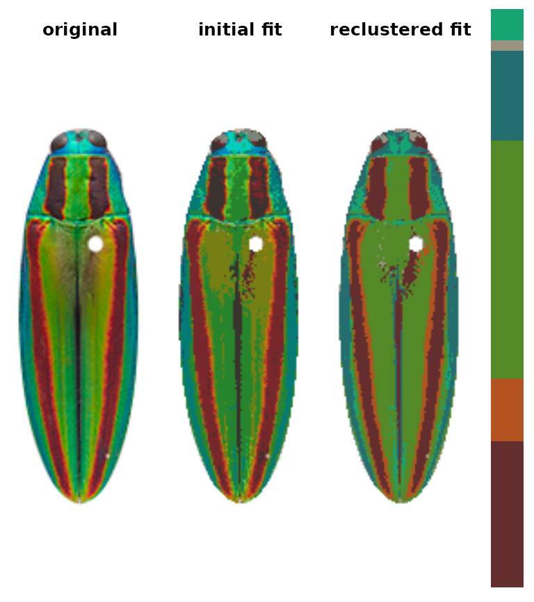
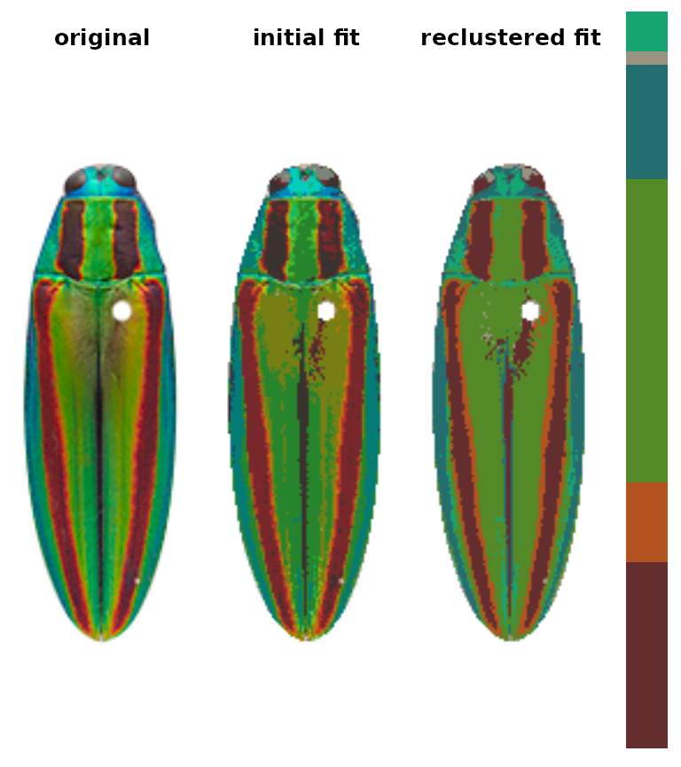
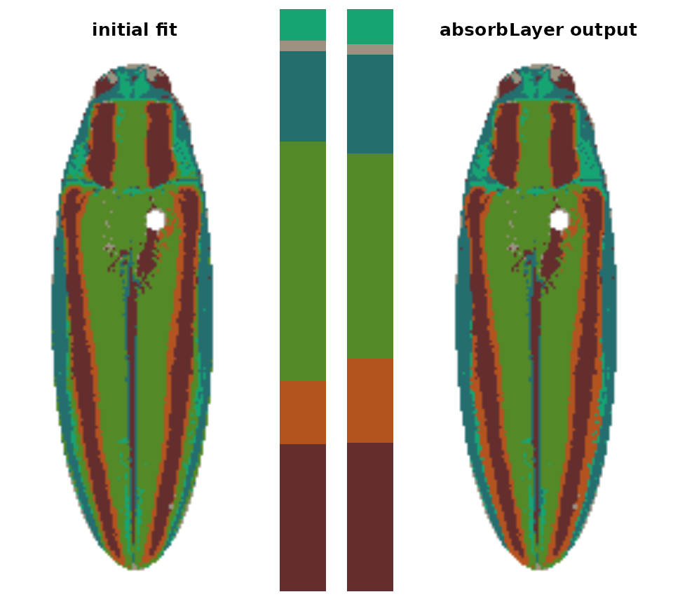

Step 4: Tweaks & edits
step04_manual_tweak.RmdCleaning up the details.
-
Introduction
-
Step 0: Image acquisition and preparation
-
Step 1: Loading & processing images
-
Step 2: Initial clustering
-
Step 3: Refinement
- Step 4: Tweaks & edits
- Step 5: Visualizing & exporting output
You can also tour the functions in the function gallery.
These are functions that can be called individually to address problem areas in specific images, or strung together as building blocks to do more complicated operations. We’ll start with this Chrysochroa fulgidissima image, which looks alright with a first pass using recolorize2:
library(recolorize)
img <- system.file("extdata/fulgidissima.png", package = "recolorize")
ful_init <- recolorize2(img, bins = 3, cutoff = 60, plotting = TRUE)
#>
#> Using 3^3 = 27 total bins 

However, the angle of the iridescent green causes part of this patch to be classified as dark brown/red (color 3), resulting in a long streak and asymmetrical speckles of this color in the center of the image.
absorbLayer
“Absorbs” all or part of a layer into the surrounding colors, optionally according to a size or location condition.
ful_absorb <- absorbLayer(ful_init, layer_idx = 3,
function(s) s <= 250,
y_range = c(0, 0.8),
highlight_color = "cyan")
This function is really useful, but fair warning: it can be quite slow. It works by finding the color patch with which each highlighted component shares the longest border and switching the highlighted component to that color, which is more sophisticated than simply switching the patch color, but requires many more calculations. If you find yourself using this a lot, it’s a good idea to make sure you’ve downsampled your images using the resize argument.
editLayer/editLayers
Applies one of several morphological operations from imager to a layer (or layers) of a recolorize object. This can be used to despeckle, fill in holes, or uniformly grow or shrink a color patch. In practice, this is mostly only useful for fixing small imperfections; anything too drastic tends to alter the overall shape of the patch.
# cleans up some of the speckles in the above output
ful_clean <- editLayers(ful_init, layer_idx = c(2, 5),
operations = "fill", px_sizes = 3, plotting = T)This function is also easy to modify. Internally, it splits the color map into individual masks using splitByColor() (another recolorize function), then converts those to pixsets for use in imager before slotting them back in with the unchanged layers.
mergeLayers
Sometimes, you don’t want to define fancy rules for deciding which layers to combine; you just want to combine layers. That’s what this function is for. It takes in a list of numeric vectors for layers to combine (layers in the same vector are combined; those in different list elements are kept separate).
corbetti <- system.file("extdata/corbetti.png", package = "recolorize")
rc <- recolorize(corbetti, plotting = FALSE)
#>
#> Using 2^3 = 8 total bins
merge_fit <- mergeLayers(rc,
merge_list = list(1, 2,
c(3, 5),
c(4, 7),
c(6, 8)))You might notice this is a bit different than our recluster results above. That’s because internally, recluster actually uses imposeColors to refit the color map, rather than just merging layers; I have found this often produces slightly nicer results, because pixels that were on the border of one cutoff or another don’t get stranded in the wrong layer. On the other hand, mergeLayers is considerably faster.